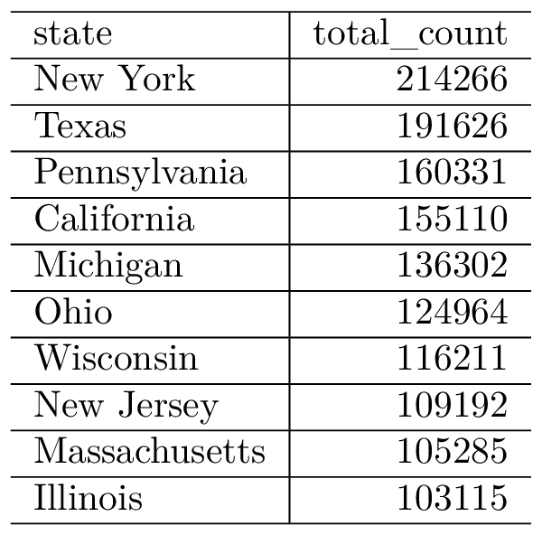
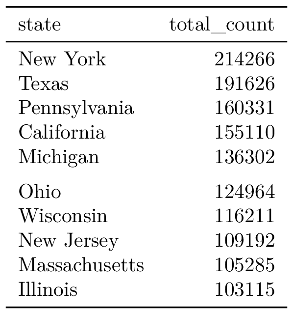

Chapter 4 How to…
4.1 Make a table full width
4.2 Add a top header
4.3 Bold columns or rows
4.4 Dynamically make changes
4.5 Take advantage of PDF-only features
Example code that will allow us to embed PDF-only table output. This
uses a couple of basic examples of doing this, with code from the dslabs package.
library(tidyverse)
library(dslabs)
data("us_contagious_diseases")
top_10_data <- us_contagious_diseases %>%
filter(disease == "Pertussis") %>%
group_by(state) %>%
summarize(total_count = sum(count)) %>%
arrange(desc(total_count)) %>%
slice(1:10) Then, you can use the kable function to create a basic PDF table:

The booktabs = TRUE option, if you include it in the kable function call, will give
some cleaner default formatting for the table:
